Skyrim Worldspace MCP
Skyrim, generated.
A Model Context Protocol server and a .NET build pipeline that let AI models build Skyrim Special Edition worlds: mountains, rivers, waterfalls, biomes, forts and towns, roads and bridges, caves and ruins. The aim is a world that looks like Bethesda made it and works in the game.
Project log, updated October 29, 2026. Every picture below is a real build output, shown next to vanilla Skyrim wherever a comparison exists.
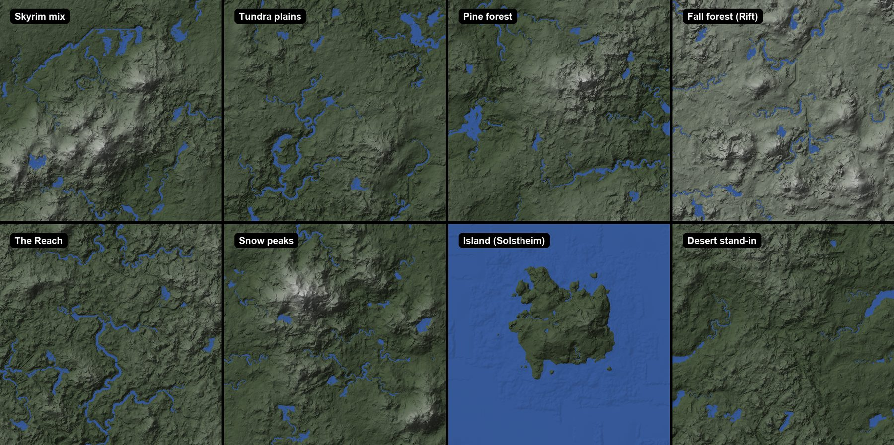
80
MCP tools an AI client can call
8
landscape scene types, each modeled on a real part of Skyrim
11–25 s
to generate a 64×64-cell world’s terrain, rivers and lakes
272
Bethesda sites in the transplant library, 263 passing headless checks
0
differences along the seams of three regions built separately and joined
550
commits in the first seven days, each result rebuilt and checked from its commit
Where things stand
Status, October 29.
Most of the pipeline now runs end to end. The current work fixes what James flagged in the last review, then builds the next test region on the new biomes.
| Part | State | Latest result |
|---|---|---|
| Terrain generator | Approved | Eight scene types quilted from vanilla Skyrim terrain pieces. James: “I think this looks amazing.” |
| Waterfalls | Reworked today | Smooth humps replaced by broken rock steps and a plunge pool; size and steepness now within vanilla’s typical spread. |
| Desert scene | New today | Built from the Reach’s badlands, Eastmarch’s volcanic flats and Solstheim’s ash plains. Stand-in until custom desert models arrive. |
| Biomes | New today | Placed from the scene type and the terrain, never from map position. No more straight borders. |
| Test region (M3) | Round 6 building | Round 5 is the approved baseline. Round 6 rebuilds it on the new biomes and fixes the site-ground squares. |
| Joined regions | Working | Three regions built separately and joined with 0 seam differences; navmesh connects across. |
| Site plan | Revising | Learned from 279 Tamriel sites. Being changed so cities only go on ground as good as vanilla’s city sites. |
| Road network | Revising | Learned from Skyrim’s 78 km of roads. Fords and smoother hairpins in progress. |
| Caves and ruins | Round 3 | Generated from Bethesda’s kit pieces. Round 3 adds open caverns. |
| Site variation | Awaiting review | Farms and forts re-laid-out and re-dressed with swapped building and fence kits. |
| In the game | This week | The test harness boots and restores Skyrim reliably; walking the generated region in game is next. |
Landscape
Terrain made from Skyrim itself.
The first generator drew mountains from math, and they never looked like Skyrim. The current one plans the large shape, then builds the ground out of real pieces of Bethesda’s landscape.
Scene plan first. A seeded plan lays out where the ranges, basins, valleys and coast go, using proportions measured from a real part of Skyrim for that scene type. A pine scene gets the Falkreath forest hills; a Reach scene gets the Reach’s broken rock; an island scene gets a Solstheim-like coast.
Then quilting. The ground inside the plan is assembled from 5×5-cell pieces of Tamriel and Solstheim. Each piece is chosen to match the plan and its neighbours, then blended in. The Throat of the World is left out of the library so it can’t be copied, and no generated peak rises above its height.
Then water. Rivers are carved downhill to lakes or the sea with a continuous bed, lakes get stepped water planes like vanilla’s, and waterfalls form where a river drops between levels.
Deterministic. The same seed, settings and game files always give the same terrain, byte for byte. A scene builds in 11–25 seconds for 64×64 cells on a 32-thread machine.
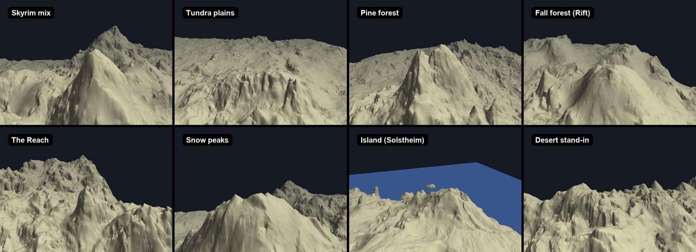
| Scene | Terrain pieces from | Character |
|---|---|---|
| Skyrim mix | All of Skyrim | Ranges, open tundra, river valleys, lakes |
| Tundra plains | Skyrim’s tundra region (Whiterun’s plains) | Wide, gentle ground with meandering rivers |
| Pine forest | Skyrim’s pine forest region (Falkreath) | Rolling hills, many small lakes |
| Fall forest | Skyrim’s fall forest region (the Rift) | Lumpy ground, terraces, many lakes |
| The Reach | The Reach | Broken rock, gorges, steep small hills |
| Snow peaks | Skyrim’s snow region | Tall single massifs and high valleys |
| Island | Solstheim | Coastline, offshore islets, a central upland |
| Desert (stand-in) | Reach badlands, Eastmarch volcanic flats, Solstheim ash | Dry, rugged ground with few rivers |

Water
Rivers, lakes and waterfalls.
Skyrim’s rivers step down through the landscape on flat water planes, with a waterfall at each step. The generator reproduces that, and every river is checked from source to mouth.

| Measure (median) | Before | Now | Vanilla |
|---|---|---|---|
| Lip height, share of the drop | 0.94 | 0.65 | 0.63 |
| Biggest single step on the face (units) | 672 | 200 | 164 |
| Face steepness | 75° | 39° | 27° |
| Face area steeper than 45° | 59% | 35% | 31% |
| Plunge pool depth (units) | 168 | 200 | 169 |
The faces are still a little steeper than vanilla’s, mostly because our falls drop further (a median of 1,104 units against vanilla’s 762). Every build checks that rivers carry water along their whole length (at most 0.1% of river points dry), have no breaks, and don’t kink at cell edges. On today’s 24 test worlds all water checks pass.
Biomes
Biomes from the land, not the map.
Which ground textures, trees and rocks go where is now decided by the scene type and the shape of the land, the way Skyrim’s own regions follow its terrain.

How it works. Each scene type carries vanilla’s mix of biomes for that kind of country. A model trained on Tamriel then places them by elevation, slope and terrain shape. Map position is never an input, so no border runs straight across the world. An optional forest-line setting moves the pine/tundra boundary up or down the hills.
Results. In the test region the longest straight run of biome border fell from 17 km to 12 km (vanilla areas: 14–34 km). Transitions are as wide as vanilla’s, about 1,300 units. There are no volcanic patches where they don’t belong.
Filling. Trees, shrubs, rocks and ground cover come from terrain-matched patches of vanilla Skyrim, at vanilla’s density. The forest floor follows the trees, roadsides get their own trees, and a regulator keeps exposed rock near vanilla’s share. Still open: shore textures appear beside some inland lakes, and the default Skyrim mix makes too little fall forest (1% against vanilla’s 7.6%).
The test region
Milestone 3: a whole region.
An 8×8-cell region written by one command: generated terrain and river, three transplanted sites, a highway with a vanilla bridge, biome fill, navmesh, gameplay records, and distant LOD.

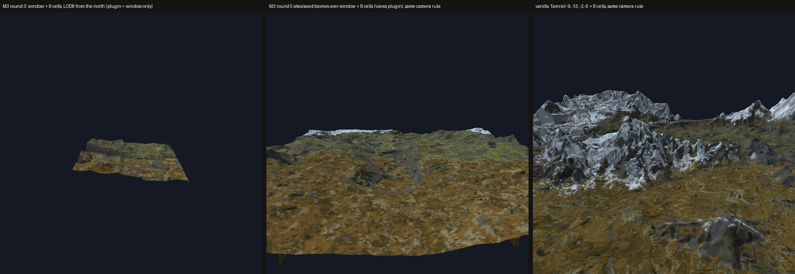
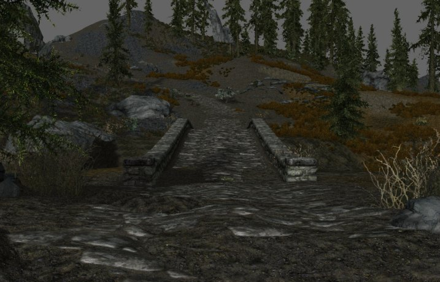
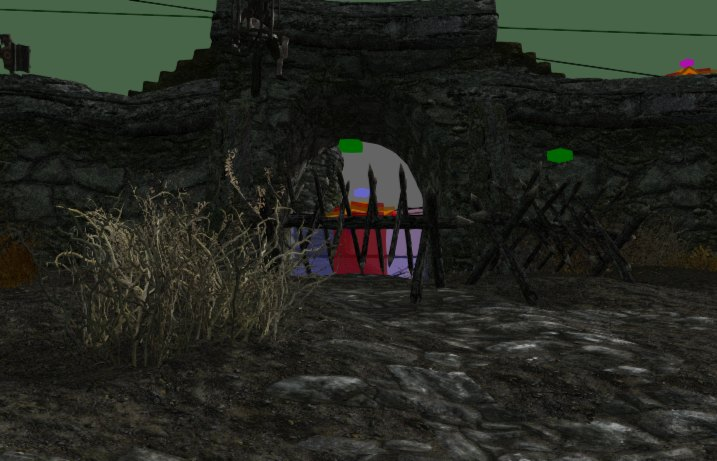
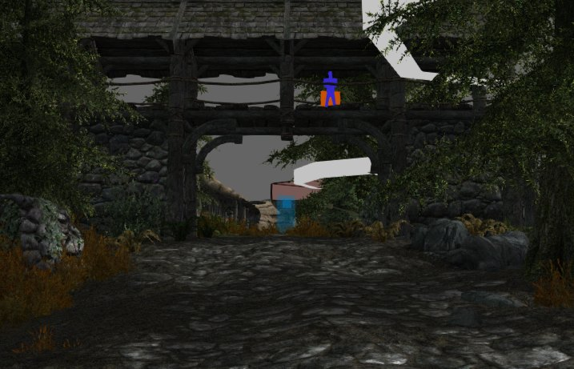
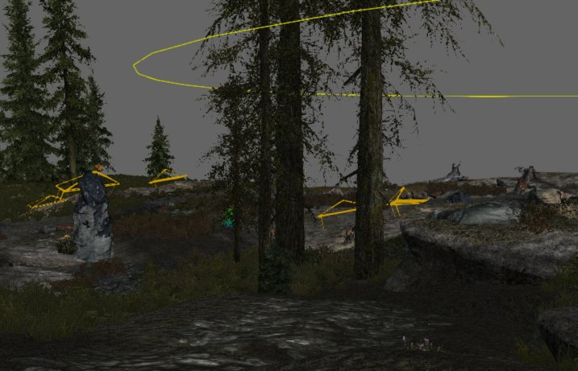
| Round 5 check | Result |
|---|---|
| Rebuilt from its commit on a clean copy | Byte-identical (raw and final plugin hashes match) |
| Plugin read back with Mutagen | Pass |
| Walkability routes on the navmesh, bridge deck included | 7 of 7 |
| Roads crossing water without a bridge | 0 |
| Site and road banks steeper than vanilla’s | 0 |
| Distant LOD generated unattended | Yes |
Round 6 (building now) rebuilds the same region on the new biomes, blends each transplanted site’s vanilla ground into the surrounding biome (Fort Dunstad’s snowy square was the visible case), and makes sites near a tile edge reproducible from both sides.
Scale
Regions that join without seams.
A full world will be built tile by tile, so separately built regions have to meet exactly.
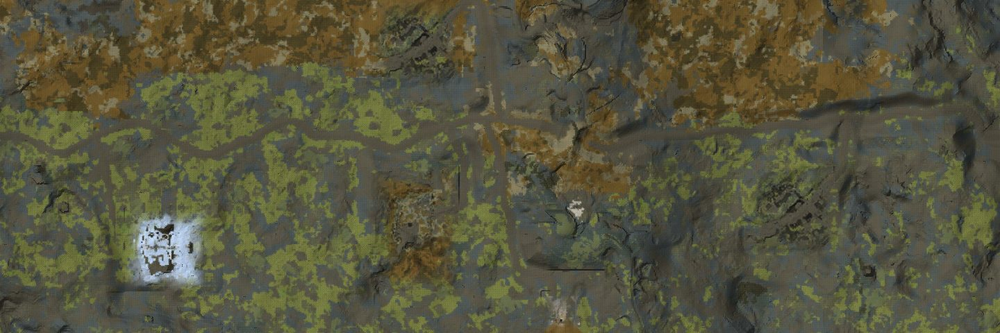
Sites
Learning from Bethesda’s sites.
Procedural towns look procedural. So the engine starts from complete Bethesda-authored locations and climbs a ladder of variation, learning the rules from the game itself.
Highlighted rungs work today. 1,398 snap rules have been learned from Bethesda’s kit pieces.

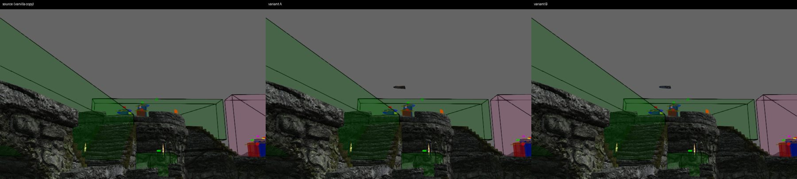
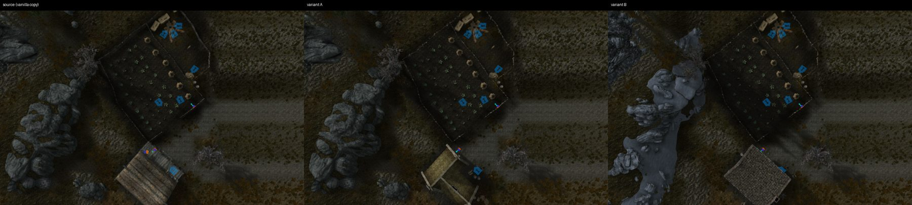
Where sites go
A deterministic planner places cities, towns, villages, forts, farms, mines, camps, ruins, towers and shrines across a generated world, using spacing and ground rules learned from 279 Tamriel sites. A 64×64-cell world gets about 246 sites. The current revision only places a city where the ground is as good as vanilla’s city sites, preferring fewer cities to bad ones.
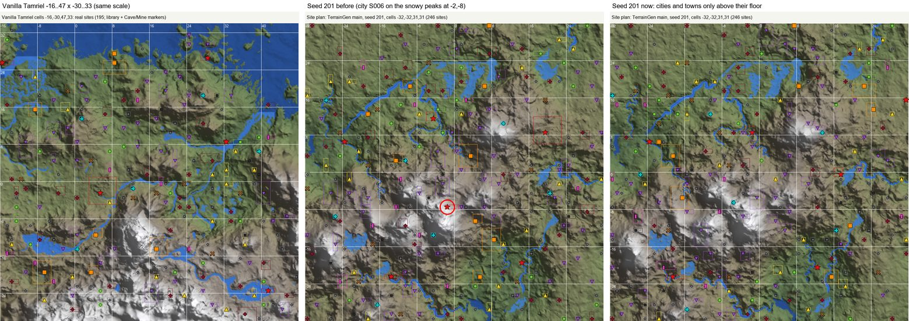
Roads
A road network learned from Skyrim’s.
Skyrim’s road network was measured from its road pieces and path textures: 78 km of road and 38 bridges. The planner reproduces how those roads choose their routes.
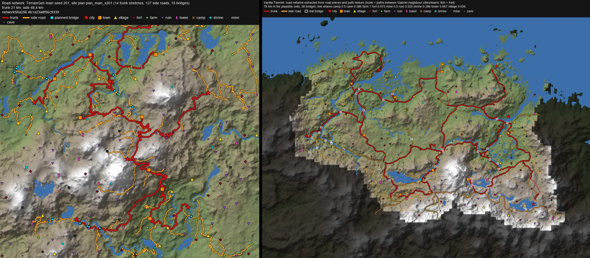
Calibrated on real roads. A least-cost router was tuned so that, between real Skyrim sites, 29% of its route lies on vanilla’s actual road, against 15% for a shortest-path baseline. Roads are then assembled from vanilla road pieces with blended shoulders. A build gate refuses any road that crosses water without a bridge.
In progress: fords where vanilla would use them (about 40% of vanilla’s river crossings) and smoother hairpins on steep ground.

Interiors
Caves and Nordic ruins from Bethesda’s kits.
The dungeon generator snaps Bethesda’s own kit pieces together using rules learned from vanilla dungeons, then adds navmesh, doors and lighting.
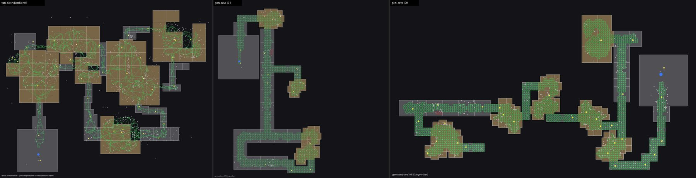
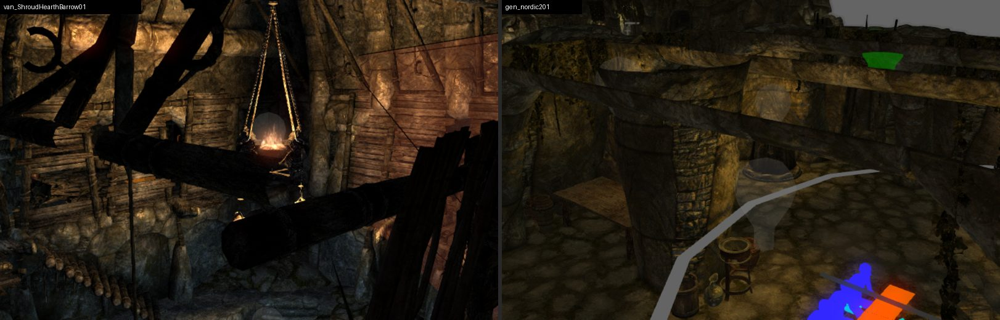
Each generated dungeon is read back, checked for gaps between pieces, and its navmesh tested for reachability, and it rebuilds identically from its commit. Generated navmesh was about four times denser than vanilla’s; round 3 thins it to vanilla’s density. The first linked interior, the Guldun Rock cave behind Fort Greymoor’s sewer grate, was approved.
New biomes
Ready for new lands.
The pipeline can take biomes Skyrim doesn’t have, such as Elsweyr’s Anequina desert, once custom models are supplied.
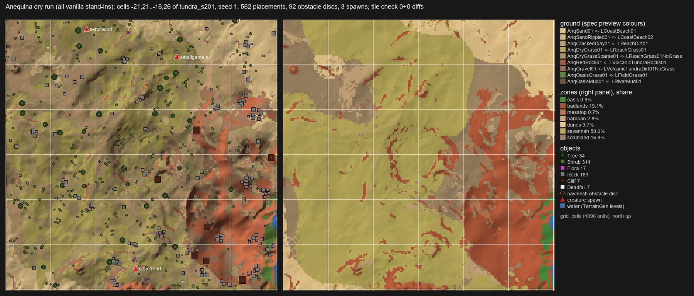

Verification
Proof, not vibes.
Nothing is accepted on a model’s say-so. Every result is rebuilt from its commit and checked by machine, then judged by eye against vanilla.
Byte-level
Rebuilt and read back.
Plugins are written byte for byte, then read back independently with Mutagen. A reviewer rebuilds each result from a clean copy of its commit and compares hashes before anything is shown for approval.
Build gates
Checks that refuse a build.
No road over water without a bridge; no site or road bank steeper than vanilla’s; continuous rivers; matching seams between regions; dependency checks for actors and quests; cliff-top exposure; forest floor under its trees.
Creation Kit
A sandboxed editor.
An isolated Creation Kit with a custom C++ camera plug-in captures views tied to exact build hashes. xLODGen runs unattended so distant terrain matches the build just written.
In the game
An unattended test harness.
It boots the real game, walks NPCs along test routes, and restores the install file for file. Calibration session: 8 of 8 boots and restores verified. The generated region’s first in-game walk is planned this week.
How it’s built
One architect, a team of agents.
The project is developed by AI coding agents working under one set of project rules, with James setting direction and judging the pictures.
Lanes
Up to four agents at once.
An architect agent splits the work into lanes (terrain, biomes, sites and assembly, interiors, roads and plans, gameplay content, in-game testing). Each lane owns its files, commits only those, and hands its result back with pictures. The architect rebuilds and checks it before James sees it.
Decisions
Agreed with pictures.
Big changes go to James as a decision brief: options with example pictures and a recommended choice. His verdicts are recorded per round and become training data for the critic.
Rules
Official game files only.
Sources are Skyrim.esm, Update.esm and the three official DLC, in an explicit load order. No third-party mods, and the game install is never modified outside the test harness, which restores it.
Stack
Built with
| Pipeline stage | Module | State |
|---|---|---|
| Land and water | TerrainGen | Working |
| Biomes and wilderness fill | BiomeFill | Working |
| Site plan | SitePlan | Revising |
| Road network | RoadPlan | Revising |
| Sites: transplant and assembly | SiteTransplant | Working |
| Site variation | SiteVariation | In review |
| Navmesh | NavmeshGen | Working |
| Interiors and dungeons | InteriorTransplant, DungeonGen | Round 3 |
| Gameplay records and persistent content | GameplayLayer, PersistentContent | Working |
| Distant LOD | LodGen | Working |
| Checks and in-game tests | MutagenCheck, GameTest | Working |
Timeline
Seven days in.
From an empty repository on October 23 to generated worlds with transplanted towns.
- FoundationsPlugin writing and Mutagen read-back, the Creation Kit sandbox, the first MCP tools.
- Milestone 1: HelgenThe whole fort town transplanted into a new worldspace with terrain and navmesh. Accepted.
- Region pieces acceptedRoads with blended shoulders, lakes and coast, biomes, site variation, Fort Greymoor with doors and bandits, the Guldun Rock cave, distant LOD, regions and map markers. M3 round 3 became the best region so far, but its mountains weren’t Skyrim’s.
- The terrain redesignTwo prototypes; James chose quilting from vanilla terrain: “so much better… not all mountains anymore.” Ported into the pipeline the same night.
- Ten items in one nightPer-scene layouts, M3 round 5 on the new terrain, the dungeon generator, a site planner, a road planner, joined regions, site variation round 4, desert flora intake, the critic. James approved all recommended options in the morning.
- Biomes, desert, waterfallsBiomes from the scene type, the desert scene and the waterfall rework landed and were verified. M3 round 6, caverns and the plan fixes are in progress.
Next
What comes next.
In order:
| 1 | M3 round 6 on the new biomes, with site ground blended into its surroundings. |
| 2 | First in-game walk of a generated region with the test harness. |
| 3 | Cities on their best ground, fords and smoother roads; then a full generated world tile by tile from a site and road plan. |
| 4 | Open caverns and Nordic ruins at vanilla quality, linked to the overworld. |
| 5 | Custom desert models for Anequina: dunes, mesas and dry riverbeds. |
Follow along
In active development.
The repository is private while the core pipeline matures. Updates go out on GitHub and X.